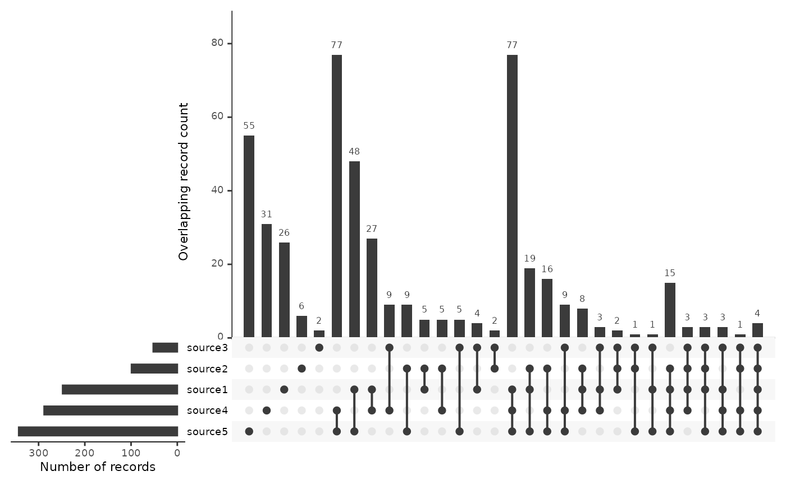
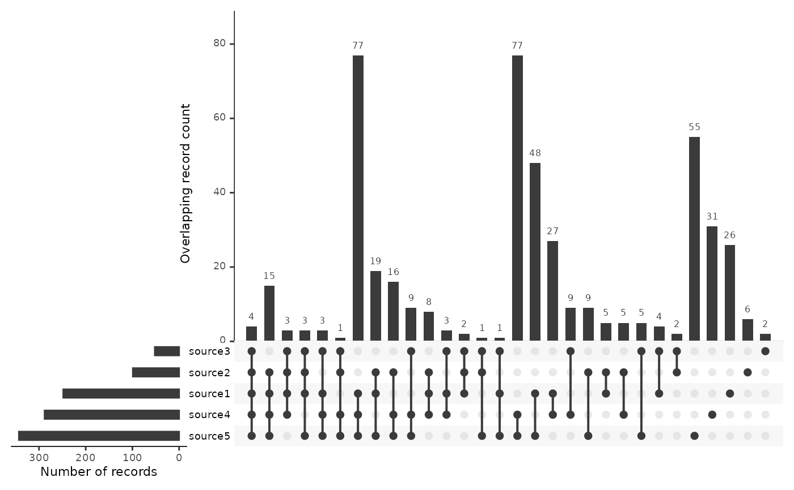

Create an UpSetR upset plot showing the overlap between sources
Source:R/plots.R
plot_source_overlap_upset.RdShow records found in specific sets of sources to identify the unique contribution of each source and of any subsets
Usage
plot_source_overlap_upset(
data,
groups = "source",
nsets = NULL,
sets.x.label = "Number of records",
mainbar.y.label = "Overlapping record count",
order.by = c("freq", "degree"),
...
)Arguments
- data
A tibble with one record per row, an id column and then one column per source indicating whether the record was found in that source.
- groups
Variable to use as groups. Should be 'source', 'label' or 'string' - defaults to source.
- nsets
Number of sets to look at
- sets.x.label
The x-axis label of the set size bar plot
- mainbar.y.label
The y-axis label of the intersection size bar plot
- order.by
How the intersections in the matrix should be ordered by. Options include frequency (entered as "freq"), degree, or both in any order.
- ...
Arguments passed on to
UpSetR::upsetnintersectsNumber of intersections to plot. If set to NA, all intersections will be plotted.
setsSpecific sets to look at (Include as combinations. Ex: c("Name1", "Name2"))
keep.orderKeep sets in the order entered using the sets parameter. The default is FALSE, which orders the sets by their sizes.
set.metadataMetadata that offers insight to an attribute of the sets. Input should be a data frame where the first column is set names, and the remaining columns are attributes of those sets. To learn how to use this parameter it is highly suggested to view the set metadata vignette. The link can be found on the package's GitHub page.
intersectionsSpecific intersections to include in plot entered as a list of lists. Ex: list(list("Set name1", "Set name2"), list("Set name1", "Set name3")). If data is entered into this parameter the only data shown on the UpSet plot will be the specific intersections listed.
matrix.colorColor of the intersection points
main.bar.colorColor of the main bar plot
mainbar.y.maxThe maximum y value of the intersection size bar plot scale. May be useful when aligning multiple UpSet plots horizontally.
sets.bar.colorColor of set size bar plot
point.sizeSize of points in matrix plot
line.sizeWidth of lines in matrix plot
mb.ratioRatio between matrix plot and main bar plot (Keep in terms of hundredths)
expressionExpression to subset attributes of intersection or element query data. Enter as string (Ex: "ColName > 3")
att.posPosition of attribute plot. If NULL or "bottom" the plot will be at below UpSet plot. If "top" it will be above UpSet plot
att.colorColor of attribute histogram bins or scatterplot points for unqueried data represented by main bars. Default set to color of main bars.
decreasingHow the variables in order.by should be ordered. "freq" is decreasing (greatest to least) and "degree" is increasing (least to greatest)
show.numbersShow numbers of intersection sizes above bars
number.anglesThe angle of the numbers atop the intersection size bars
group.byHow the data should be grouped ("degree" or "sets")
cutoffThe number of intersections from each set (to cut off at) when aggregating by sets
queriesUnified query of intersections, elements, and custom row functions. Entered as a list that contains a list of queries. query is the type of query being conducted. params are the parameters of the query (if any). color is the color of the points on the plot that will represent the query. If no color is selected one will be provided automatically. active takes TRUE or FALSE, and if TRUE, it will overlay the bars present with the results from the query. If FALSE a tick mark will indicate the intersection size. See examples section on how to do this.
query.legendPosition query legend on top or bottom of UpSet plot
shade.colorColor of row shading in matrix
shade.alphaTransparency of shading in matrix
matrix.dot.alphaTransparency of the empty intersections points in the matrix
empty.intersectionsAdditionally display empty sets up to nintersects
color.palColor palette for attribute plots
boxplot.summaryBoxplots representing the distribution of a selected attribute for each intersection. Select attributes by entering a character vector of attribute names (e.g. c("Name1", "Name2")). The maximum number of attributes that can be entered is 2.
attribute.plotsCreate custom ggplot using intersection data represented in the main bar plot. Prior to adding custom plots, the UpSet plot is set up in a 100 by 100 grid. The attribute.plots parameter takes a list that contains the number of rows that should be allocated for the custom plot, and a list of plots with specified positions. nrows is the number of rows the custom plots should take up. There is already 100 allocated for the custom plot. plots takes a list that contains a function that returns a custom ggplot and the x and y aesthetics for the function. ncols is the number of columns that your ggplots should take up. See examples for how to add custom ggplots.
scale.intersectionsThe scale to be used for the intersection sizes. Options: "identity", "log10", "log2"
scale.setsThe scale to be used for the set sizes. Options: "identity", "log10", "log2"
text.scaleNumeric, value to scale the text sizes, applies to all axis labels, tick labels, and numbers above bar plot. Can be a universal scale, or a vector containing individual scales in the following format: c(intersection size title, intersection size tick labels, set size title, set size tick labels, set names, numbers above bars)
set_size.anglesNumeric, angle to rotate the set size plot x-axis text
set_size.showLogical, display the set sizes on the set size bar chart
set_size.numbers_sizeIf set_size.show is TRUE, adjust the size of the numbers
set_size.scale_maxIncrease the maximum of set size scale
References
Conway, J. R., Lex, A., & Gehlenborg, N. (2017). UpSetR: an R package for the visualization of intersecting sets and their properties. Bioinformatics.
Examples
data <- data.frame(
article_id = 1:500,
source__source1 = rbinom(500, 1, .5) == 1,
source__source2 = rbinom(500, 1, .2) == 1,
source__source3 = rbinom(500, 1, .1) == 1,
source__source4 = rbinom(500, 1, .6) == 1,
source__source5 = rbinom(500, 1, .7) == 1
)
plot_source_overlap_upset(data)

# To start with the records shared among the greatest number of sources, use
plot_source_overlap_upset(data, decreasing = c(TRUE, TRUE))
